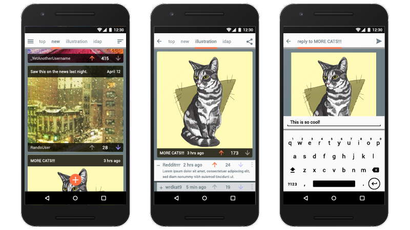
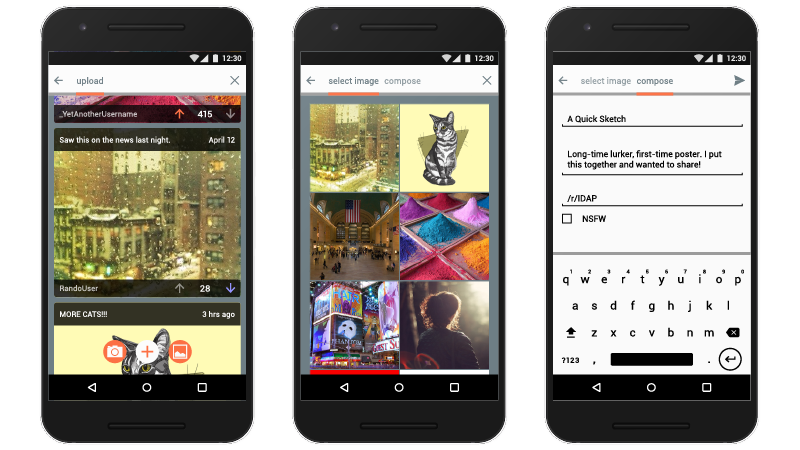
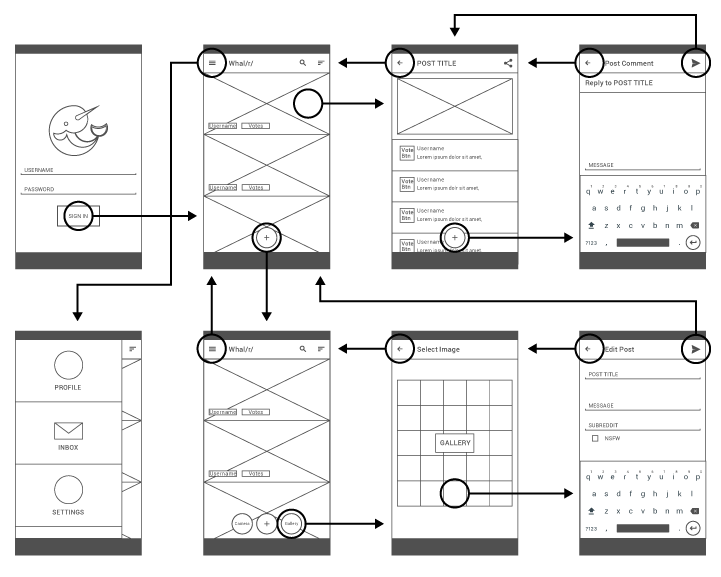

Most Reddit apps display content similar to the site’s own bulletin board style layout without adding to the experience of browsing Reddit. This minimalist, feed-based approach is effective at presenting user-generated content in high volume but misses an opportunity to keep users engaged with multimedia posts. Especially for users providing their own original multimedia content, the submission process needed to be simple and intuitive.
Several user interviews were conducted to evaluate user habits when browsing Reddit.
Whal/r/ had a mandate - stay true to the spirit of Reddit while building a rich, intuitive, visual experience. Carrying that mandate into the design users are never more than one tap away from their favorite subreddits.
Whal/r/ is optimized not only for the more media heavy subreddits but artists, musicians, and other creative types as well. Whal/r/ is optimized not only for the more media heavy subreddits but artists, musicians, and other creative types as well. Whal/r/ is optimized not only for the more media heavy subreddits but artists, musicians, and other creative types as well.